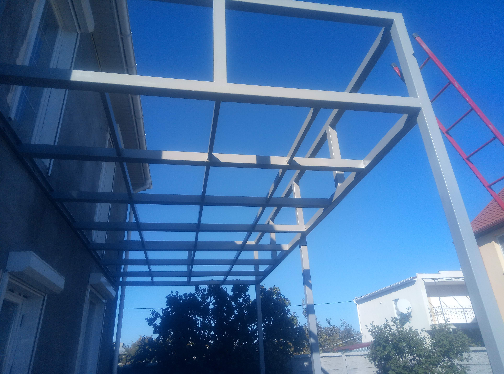
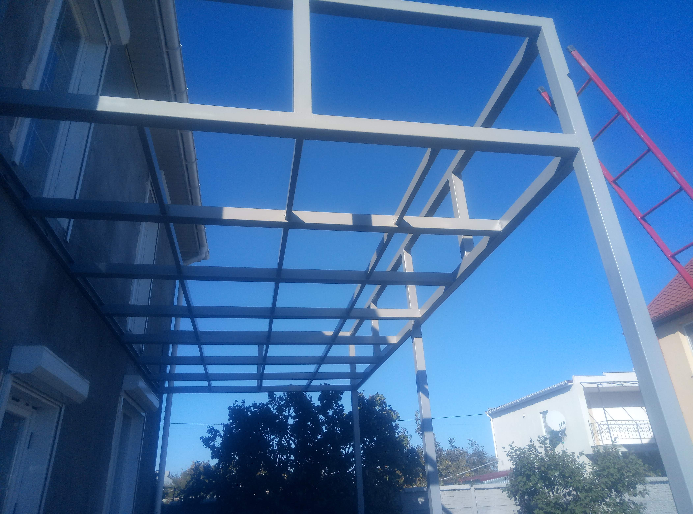

Metallbau & Schweissarbeiten
Wir übernehmen Metallbau- und Schweissarbeiten in verschiedensten Grössenordnungen – von kleinen Reparaturen bis zu kompletten Metallkonstruktionen. Dazu gehören Carports und Vordächer, Treppen und Handläufe, Geländer, Zäune, Tore und Unterkonstruktionen für Terrassen, Holzbeläge oder Modulbauten. Gearbeitet wird hauptsächlich mit Stahl, bei Bedarf auch mit Edelstahl oder Aluminium.
Für jede Konstruktion planen wir Statik und Anschlüsse pragmatisch und objektspezifisch: passende Profile, Plattendicken, Befestigungsmittel und Korrosionsschutz. Wir fertigen die Bauteile in der Werkstatt vor und montieren sie anschliessend vor Ort im Kanton Zürich und Umgebung. Auf Wunsch werden die Elemente feuerverzinkt, pulverbeschichtet oder mit einem deckenden Anstrich versehen, damit sie optisch zum Gebäude und zur Umgebung passen und langfristig geschützt sind.
Neben Neuanfertigungen führen wir auch Anpassungen und Reparaturen aus: Nachrüstung von zusätzlichen Pfosten oder Streben, Verstärkung bestehender Konstruktionen, Austausch beschädigter Teile, Schweissreparaturen an Toren und Geländern oder das Nachrüsten von Sicherheitselementen wie Handläufen und Trittstufen. Wenn nur ein kleiner Abschnitt ersetzt oder angepasst werden muss, suchen wir immer eine Lösung, bei der möglichst viel der bestehenden Konstruktion erhalten bleibt.
Bilder zu Metallbau & Schweissarbeiten


 

Metallkonstruktion oder Schweissarbeit geplant?
Wenn Sie im Kanton Zürich oder in der Schweiz einen Carport, ein Vordach, neue Treppen oder Geländer, einen Zaun mit Tor oder eine andere Metallkonstruktion planen oder bestehende Elemente anpassen lassen möchten, unterstützen wir Sie gerne – von der Idee bis zur Montage.
Sie können uns über das Kontaktformular, per E-Mail, via WhatsApp oder telefonisch unter +41 79 846 78 31 erreichen. Schicken Sie uns gerne eine kurze Beschreibung oder eine Skizze – wir melden uns zeitnah mit Vorschlägen und einer realistischen Kostenschätzung.